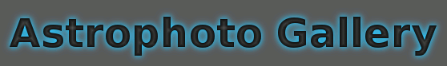
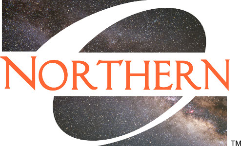

|
|
 |
|
|  |
Public Events at the ONU Observatory |
Fall 2022 Schedule -- ONU Observatory
Maps to the ONU Observatory can be found
here.
Sunday, Aug 21, 8:30-9:30 pm -- ONU event. "Welcomefest Open House" Friday, Sept 16, 9:00-11:00 pm -- Public Event "Neptune at its closest"
ONU and the surrounding community are invited to drop by the ONU Observatory
between 9:00-11:00 pm this Friday, September 16 for the first astronomy public
event of the Fall season. Each event is planned around some theme or a
celestial happening.
This Friday, September 16, is the date that Neptune will be
at its closest to the Earth. That is, Neptune will be in opposition.
This is also when a planet looks its biggest and brightest in a telescope.
Neptune is too faint to see with the unaided eye, but it appears as a blue
dot through our telescopes. Saturn, will also be well placed for viewing
because it recently passed opposition on August 14. It is easier to
see features of Saturn, like its moons and its amazing rings!
Come and see these and other wonders of the night sky!
The forecast (as of 9/13) is looking good: partly cloudy and warm (68 F). We will announce any cancellations by Friday, 2:30 pm, just below this brown text.
This event was a success!
Friday, Sept 23, 8:00-10:00 pm -- Public Event. "Autumnal Equinox and Jupiter approaching opposition"
All are invited to drop by the ONU Observatory
between 8:00-10:00 pm this Friday, September 23 for the second astronomy public
event of the Fall season. This Friday is a celebration of the autumnal equinox
or the start of autumn. This year, the actual moment when the Sun crosses the
celestial equator on its way south is on September 22
(around 9 pm EST). After this date, the length of nighttime will surpass
the length of daytime (which is good for skygazing!).
Saturn will make an excellent target for our telescopes. Jupiter rises a
little later but is even brighter than Saturn. In fact, it will be at its
brightest on September 26 when it is closest to the Earth (opposition).
The forecast (as of 9/20) calls for mostly cloudy skies (90% overcast) and cool (53 F) weather. This is too cloudy to observe. We will post a cancellation notice by Friday, 2:30 pm just below these words.
This event is cancelled due to a forecast of cloudcover.
Friday, Oct 21, 8:00-10:00 pm. -- Public Event. "Orionid Meteor Shower"
ONU and the surrounding community are invited to drop by the ONU Observatory
between 8:00-10:00 pm this Friday, October 21, for the third public
astronomy event at ONU Observatory for this Fall.
This event is scheduled to coincide with the peak of the Orionid Meteor
Shower. This is a popular annual meteor shower that emanates from
the constellation Orion. Meteors (or "falling stars") are bright streaks in
the sky caused by small particles speeding through our atmosphere. The Orionid meteor
particles originated in Halley's comet. The Orionids are generally
faster and brighter than average. The rate of meteors will be greater after
midnight when Orion rises, so we will likely only see about 10/hour.
We will also train our telescopes on planets (Jupiter and Saturn) and deep
sky objects.
The forecast (as of 10/19) is calling for only 10% cloud cover on Friday and 57 F. If the forecast changes for the worse, a cancellation message will appear below this text.
This event was a success!
Friday, Nov 11, 8:00-10:00 pm. -- Public Event. "Uranus at Opposition" Friday, Dec 9, 8:00-10:00 pm. -- Public Event. "Opposition of Mars" Printer-friendly version here. |
Fall 2021 Schedule -- ONU ObservatorySunday, Aug 22, 8:30-9:30 pm. -- ONU Event. "Welcomefest Meet-n-greet" Friday, Sept 24, 8:30-10:30 pm. -- ONU Event. "Jupiter and Saturn put on a show"
The gas giant planets Jupiter and Saturn are
conveniently placed in the South-southeast for
viewing with our telescopes. We will also take a
look at Neptune which recently passed opposition.
The transmission rates of covid are high so this will be an
ONU-only event.
This event was a success - Jupiter and Saturn did put on a show!
Friday, Oct 8, 8:00-10:00 pm. -- ONU Event. "Draconid meteor shower"
Meteor showers occur when the Earth passes through a trail
of debris left by a comet. The Draconid meteor shower has
particles originating in the Giacobini-Zinner comet. They
appear to stream out of a point in the constellation Draco,
hence the name. Usually this meteor shower produces fewer than
10 meteors per hour, but on certain years (1933, 1946, 2012) it had
outbursts of up to 1000 meteors per hour. You wouldn't want to
miss a meteor STORM!
The transmission rates of covid are high, and county vaccination rates
less than 33%, so this will be an ONU-only event.
This event is cancelled due to a forecast of clouds and rain.
Friday, Oct 29, 8:00-10:00 pm. -- ONU Event. "Venus - high and bright"
This star party is scheduled close to the "greatest eastern
elongation" of Venus. That is when Venus appears at its
largest angular distance from the Sun, about 46 degrees.
Venus looks impressively bright and is the brightest of the
planets. Through the telescope, it should exhibit a "first
quarter" phase.
When the 7-day average of new covid cases drops back down to
1 per day (the July 2021 rate), then I will consider opening to the public.
This event is cancelled due to a forecast of clouds and rain.
Friday, Dec 3, 8:00-10:00 pm. -- ONU Event. "Deep sky comets"
Comets may be in the news during December because Comet
C/2021 A1 (Leonard) is expected to become visible to the naked-eye
in December. Unfortunately, it will be a morning
object and not visible from 8-10 pm on December 3.
However, on any given night, there are usually over a
dozen "deep sky" comets detectable by cameras on amateur-sized
telescopes. We've identified two such comets for which we may
be able to obtain and display live images.
(These are Comet 29P/ Schwassman-Wachmann and Comet C/2019
L3 ATLAS.) We can also look at brighter stars and planets
that are up. Good sky conditions are required to see the comets.
A cancellation notice will appear here by 1 pm on December 3
if the forecast is too cloudy.
This event was a success! Started cloudy but got better.
Printer-friendly version here. |
Fall 2020 Schedule -- ONU ObservatoryRegretfully, the ONU Observatory will not be hosting public events in the foreseeable future until the covid-19 virus is under control. |
Spring 2020 Schedule -- ONU ObservatoryFriday, Feb 14, 7:00-8:00 pm. -- Public Event. "Venus, Goddess of Love"
It's Valentine's day! So what better time to look at the love-related
objects in astronomy. The planet Venus is named after the Roman Goddess of
love and it is an easy target for our telescopes during evenings this spring.
This night also happens to be the Greatest Elongation of Mercury, but it will
be almost set at 7 pm.
Continuing the Valentine's theme,
we can look for more challenging deep sky objects like the
Heart Nebula and the Heart-shaped Cluster (Messier 50).
It turns out that dozens of heart shaped features have been
discovered on other planets, like Mars, although they are not quite
visible from ground-based telescopes.
Check back here on Friday at 2 pm for possible cancellations.
Friday, Feb 28, 8:00-10:00 pm. -- Public Event. "Leap Days and Time"
ONU and the surrounding community are invited to drop by
the ONU Observatory between 8:00-10:00 pm this Friday night.
Dr. Pinkney plans to give a short presentation about "Leap Days
and Time" at 9 pm. This year, 2020, is a leap year which means that the
calendar will include a "Feb 29" for the first time in 4 years.
Why do we do this and how long have we been doing it?
Our telescopic targets will include Venus and the Moon, which will be
separated by only 14 degrees. Uranus is midway between them.
The winter Milky Way with its many interesting deep sky objects will
also be well placed in the sky.
The forecast is currently calling for partly cloudy and cold (20 F) weather. We will announce any cancellations by Friday by 2:30. Friday, Mar 6, 8:00-10:00 pm. -- Public Event. "Moon in the Beehive"
Buzz by the ONU Observatory on Friday, Mar 6, between 8 and 10 pm
for a star party called "Moon in the Beehive". The name refers
to the way the Moon will have just passed through the Beehive star cluster in
the constellation Cancer.
Tonight we'll take on the challenge of spotting and photographing
the faint but large star cluster with a bright Moon nearby. The bright
Moon itself will be a target of observation. It will be in a gibbous
phase (between half and full), with the crater Aristarchus
near the terminator line.
We can also observe double stars and brighter objects in the
winter Milky Way like the Orion Nebula.
Mar 6 update: it may be a good night to see lunar halos (because of the layer of haze expected), but not much else. Friday, Mar 20, 8:30-10:30 pm. -- Public Event. "The Vernal Equinox" Friday, Mar 27, 9:00-11:00 pm. -- Public Event. "Venus at Greatest Elongation" Friday, Apr 17, 9:00-11:00 pm. -- Public Event. "Comet C/2017 T2 PANSTARRS" Friday, Apr 24, 9:00-11:00 pm. -- Public Event. "Galaxies of Spring" Printer-friendly version here. |
Fall 2019 Schedule -- ONU ObservatorySunday, Aug 25, 8:30-9:30 pm. -- ONU Event. "Welcomefest Meet-n-greet" Friday, Sept 20, 9:00-11:00 pm. -- Public Event. "Fall Star Party" Friday, Oct 4, 8:00-10:00 pm. -- Public Event. "Moon between Saturn and Jupiter" Friday, Oct 25, 8:00-10:00 pm. -- Public Event. "Blue planets in opposition" Monday, Nov 11, 10:00am -12:00 pm. -- Daytime Public Event. "The transit of Mercury across the Sun" |
Spring 2019 Schedule -- ONU ObservatoryFriday, Feb 1, 8:00-10:00 pm. -- Public Event. "The Fading Comets of 2019" Friday, Mar 1, 7:00-9:00 pm. -- Public Event. "Greatest elongation of Mercury" Friday, Mar 22, 9:00-11:00 pm. -- Public Event. "Vernal Equinox" Friday, Mar 29, 9:00-11:00 pm. -- Public Event. "Supernovae and their remnants" Friday, Apr 5, 9:00-11:00 pm. -- Public Event. "Galaxies of Spring" Friday, May 3, 9:00-11:00 pm. -- Public Event. "Eta Aquariid Meteors" |
Fall 2018 Schedule -- ONU ObservatorySunday, Aug 19, 9:00-10:00 pm. -- ONU Student Event. "Welcomefest Open House" Friday, Sept 7, 9:00-11:00 pm -- Public Event "Opposition of Neptune" Friday, Sept 21, 8:00-10:00 pm -- Public Event "Autumnal Equinox" Friday, Oct 12, 8:00-10:00 pm. -- Public Event. "Observe the Crescent Moon" Friday, Nov 9, 8:00-10:00 pm. -- Public Event. "Asteroids and OSIRIS-REx" Friday, Dec 7, 8:00-10:00 pm. -- Public Event. "Comet Wirtanen" |
Summer 2018 Schedule -- ONU ObservatoryM-W, June 11-13, 9:00-11:00 pm. -- Private Event. "Summer Academic Honors Institute (SAHI) -- Physics and Astronomy Camp"Monday, June 18, 9:00-10:30 pm. -- Private Event. "The Ada Library Summer Reading Program - The Night Sky" Monday, July 30, 9:30-11:00 pm. -- Public Event. "Opposition of Mars"
The ONU Observatory will be open to the public on Monday, July 30
from 9:30-11 pm, weather permitting. On this date, Mars will be
3 days passed its opposition. ``Opposition" is the planetary
configuration in which the planet appears in the opposite
direction as the Sun from the Earth's perspective. It is also
the time of closest approach to the Earth, making Mars look
bigger and brighter than usual.
This will be the closest we've come to Mars since the 2003
opposition (but that was the closest in about 60,000 years).
At 9:30 pm Mars will not quite be high enough to see with the
telescopes, but we will observe Venus, Jupiter and Saturn as we
wait for Mars to rise higher.
(We chose July 30 instead
of July 27 because the Full Moon interferes with our view of Mars
on the 27th. )
|
Summer 2017 Schedule
|
Arrange a tour or visit?We encourage your K-12 students and other organizations to visit during the Public Events listed above. However, you may be able to schedule a special visit. We can comfortably fit about 60 people in the observing room. Bigger groups can still attend. During the daytime, we will show you the building and telescopes and, if clear, can view the Sun! We don't roll back the roof if there is precipitation. If interested, contact the Observatory Manager:Dr. Jason Pinkney ONU Dept of Physics and Astronomy 525 S. Main St., Ada, OH, 45810 j-pinkney@onu.edu Office: 419-772-2740 Observatory: 419-772-4028 See maps to the ONU Observatory. Check the weather at ONU Observatory: Clear Sky Chart. See the Observatory's Astrophoto gallery. |